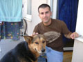

Izraeli barátunk néz. Olcsó turistafotó.
A Kis Hercegnõ szobra a Dunakorzón
Most pedig a Lánchidat látjuk
A Lánchídon éppen valami reklámfilmet forgattak, ez az MD-500-as zörgött összevissza, filmezte a fent szerencsétlenkedõ alakot
A túlparton fénykép készült Itzikrõl és a gonosz antiszemita-rasszisták címerérõl. A gonosz antiszemita-rasszisták nagyon buta emberek, még a címerük is tiszta sötét.
Felmentünk az Alagút tetejére, és az nekünk jó volt. Olcsó turistafotók sorozat, sokadik rész.
Egyébként azért jöttük fel, hogy jobban lenézhessük a lentieket (gyk. az antiszemita-rasszistákat)
Így néz ki a Lánchíd, ha nagyon szar kamerával fényképezik
Megtekintettük az antiszemita-rasszisták führerének szobrát a Várban, mely épp állatkínzás közben ábrázolja õt
Ez volt az imént említett führer bunkere, melybõl szerencsére kifüstölték az igazság nevében
Megtekintettük egy elavult vallás szentélyét, melynek követõit rádió útján kiadott jelszóra egy napon ki fogjuk irtani.
Ebbõl majd kilátótorony lesz
Odabent volt ilyen, nem tudjuk, mi ez, de biztos valami vallási dolog
A Magdolna-torony számomra igen érdekes, ugyanis gyerekkorom óta szerettem volna megtalálni, de valahogy sosem sikerült. Most elõször sikerült, éljen.
Rövidesen a Mammut szentély mellett voltunk. Próbáltunk vacsorát szerezni, de sehol sem kaptunk. Elvégre már tíz óra volt, tessék aludni menni, a mindenségit!
A Mammutban megtekintettük a Szamos Marcipán minitárlatát
Találtunk ilyen összegyûrt fémet, amirõl állítólag annak kellene eszünkbe jutnia, hogy 1956-ban kinyílt a csipája az antiszemita-rasszistáknak, és lövöldözni kezdtek
Ez itt a Nyugati Pályaudvar, egy nagyon régi és elavult épület, melyet szerencsére modernné, vidámmá és fõleg világvárosivá varázsolnak a kedves kék neoncsövek

A másik irányba nézve ez volt látható, villamossín, tényleg érdekes

Vendégemnek nagyon tetszett az utca neve
Vendégemnek a Túró Rudi is nagyon ízlett (hamarosan átnevezzük Túró Ezékielre)
Berta nagyon barátságos volt a vendéggel, elvégre õ is tagja a világösszeesküvésnek. Itt éppen tappancsol. Berta feladata, hogy kiszagolja az ellen-világösszeesküvéseket. Ha sikerül hatalomra kerülnünk, be fogjuk tiltani a világösszeesküvéseket, nehogy valaki kitúrjon minket.
Itt meg örül, hiszen õ is zsidó. Naná! Nézzétek, mekkora orra van.

Éljen a történelmi kutya-zsidó barátság!
Berta azért veszélyes is tud lenni. Hrr!
A Mein Kampf legújabb változata szintén nagyon tetszett a vendégnek
Este ismét fotózni indultunk. Elsõ lépésben megtaláltuk a Rumbach utcai zsinagógát.
Nosza, találós kérdés. Hol készült ez a felvétel? A megfejtõk közt a Zsidó Világösszeesküvésben való egy éves részvételi jogot sorsolunk ki.

Matrica az éjszakában
Budapest a Citadelláról nézve
Ez ilyen sármos kép
Megtaláltuk a Citadellában az ostrom 60. évfordulójára nyitott kiállítás bejáratát. Sajnos zárva volt (vagy nem is sajnos, én már láttam, kalap szar az egész), de azért a kint díszelgõ fotókról készítettünk egy fotót.
Újabb buta turistafotó, melyhez megpróbáltam megtámasztani ezt a fos kamerát, hogy ne csak elmosódott fényfoltokat vegyen
A Citadella mellett jókora táblákon fényképek mutatják be Budapest történetét. Itzhakot nagyon érdekelte ez is, és minden, amit a városról meséltem neki.
Izraeli barátunk nagyon érdekesnek találta a hajléktalanok által hátrahagyott miniüveget.
Na, és hol kötöttünk ki végül? Naná, hogy már megint a Lánchíd tetején. Mondtam neki, hogy ha akar érdekes képeket készíteni, menjünk fel oda. Mentünk...
Pillantás a pesti partra
Hajók
Bámulás lefelé
Ez ilyen... scary
Még scarybb
Ezek itt mi vagyunk